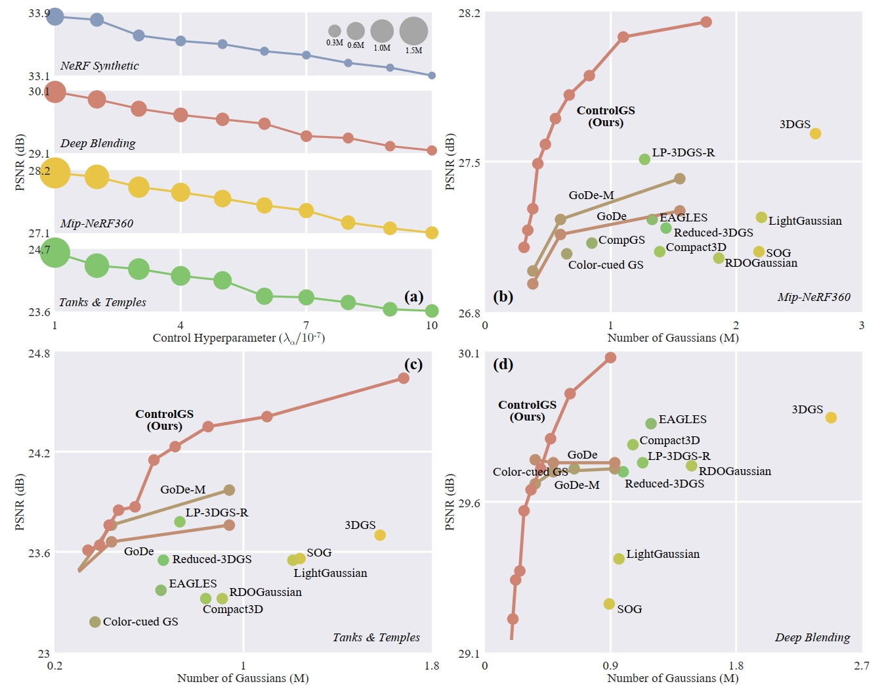

Results
Quantity–Quality Control Performance
ControlGS achieves smooth, stepless, and predictable control over the trade-off between rendering quality and Gaussian quantity across diverse scenes, including high-fidelity reconstructions and highly compressed models, and significantly outperforms baseline methods in control consistency, range, and precision.

Comparison with SOTA method
Compared to existing methods, ControlGS achieves higher rendering quality with fewer Gaussians on unseen test views, consistently preserving intricate structures and high-frequency textures across diverse scenes.